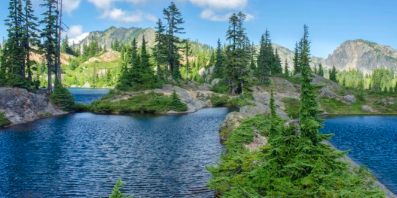

Through the Tourism and Travel Web GIS project, I hope to inspire a sense of adventure and
discovery in travelers, encouraging them to explore the richness and diversity of Washington
State beyond the conventional tourist hotspots. By offering a platform that showcases the lesser-known
aspects of the state, we aim to create unforgettable experiences and connect travelers with the hidden
treasures that make Washington State truly unique.
